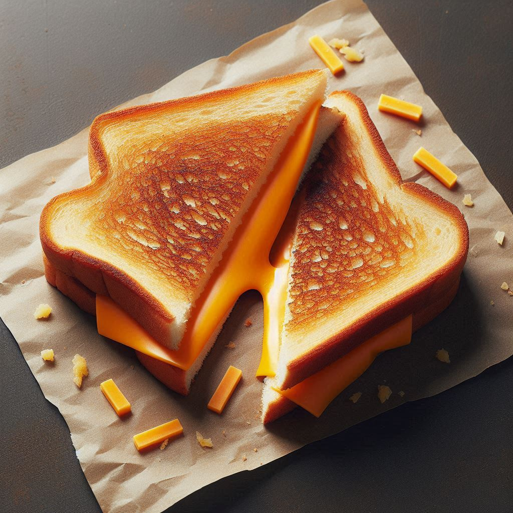

Home
Grilled Cheese

Description
This classic grilled cheese sandwich is a sight to behold. The two
slices of white bread are perfectly toasted to a golden brown, with
the melted cheddar cheese oozing out slightly from the middle. The
sandwich is cut into two neat triangular halves, making it the
perfect comfort food. Whether enjoyed as a quick snack or a light
meal, this grilled cheese sandwich promises warmth and satisfaction
in every bite.
Ingredients
- 4 slices white bread
- 3 tablespoons butter, divided
- 2 slices Chaddar cheese
Steps
- Gather all ingredients.
-
Preheat a nonstick skillet over medium heat. Generously butter
one side of a slice of bread.
-
Place bread butter-side down in the hot skillet; add 1 slice
of cheese.
-
Butter a second slice of bread on one side and place butter-side
up on top of cheese.
-
Cook until lightly browned on one side; flip over and continue
cooking until cheese is melted.
-
Repeat with remaining 2 slices of bread, butter, and slice of
cheese. Serve and enjoy!